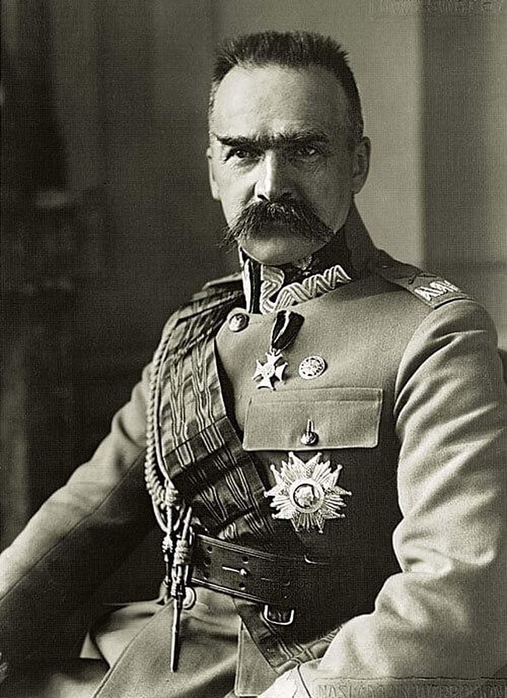
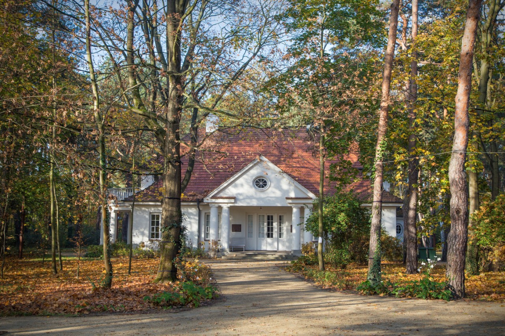
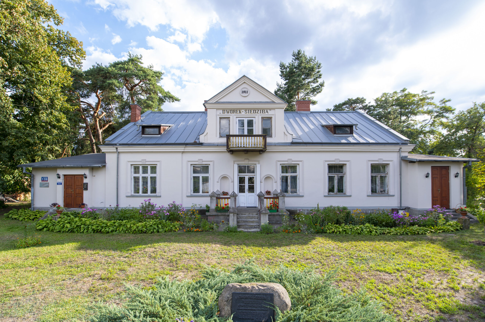
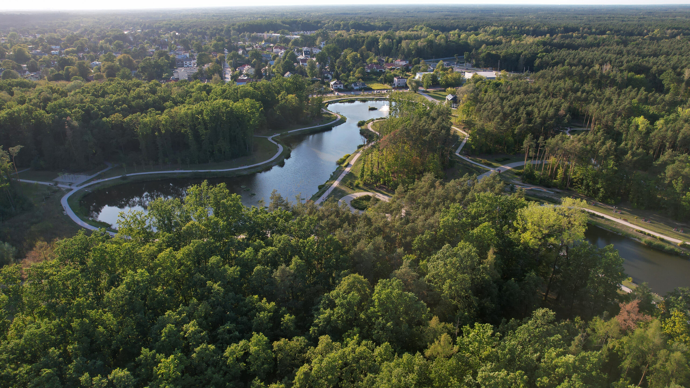
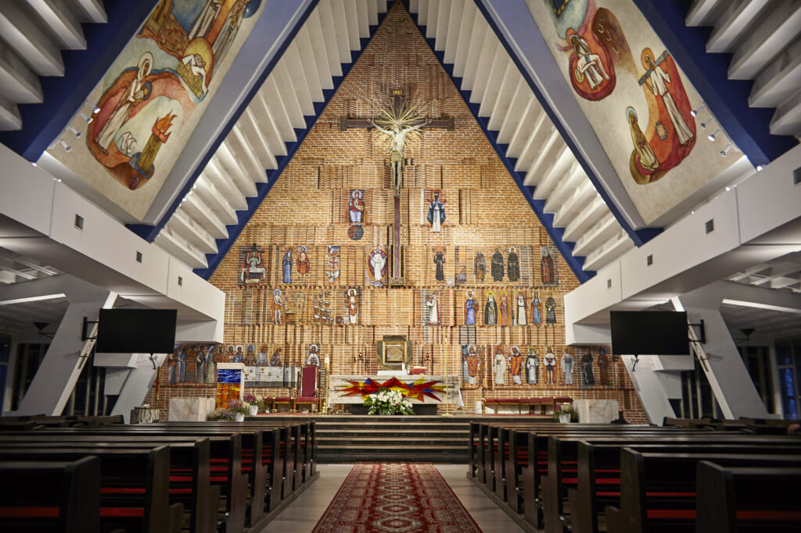

SULEJÓWEK
Rzym Sulejówek Londyn

Sulejówek to urokliwe miasto w województwie mazowieckim, które choć prawa miejskie uzyskało w 1962 roku, zapisało się złotymi zgłoskami w historii Polski znacznie wcześniej. Jego rozwój przyspieszył na przełomie XIX i XX wieku dzięki budowie linii kolejowej, co nadało miejscowości charakter prestiżowego letniska typu miasto-ogród, przyciągającego elity polityczne i intelektualne. Najważniejszą postacią związaną z Sulejówkiem był Józef Piłsudski, który zamieszkał tu w 1923 roku w dworku „Milusin” – darze od żołnierzy. Dziś w tym miejscu znajduje się nowoczesne Muzeum Józefa Piłsudskiego, będące sercem kulturalnym miasta. Obecnie Sulejówek liczy około 20 000 mieszkańców i jest ceniony za kameralną, niską zabudowę oraz obfitość terenów zielonych. Dzięki doskonałemu skomunikowaniu z Warszawą za pomocą linii SKM i Kolei Mazowieckich, stanowi idealne miejsce do życia dla osób łączących spokój z aktywnością zawodową w stolicy. Miasto do dziś pielęgnuje pamięć o swoich słynnych mieszkańcach, takich jak Ignacy Paderewski czy Jędrzej Moraczewski, pozostając ważnym punktem na historycznej mapie Mazowsza.
dworek milusin

Dworek „Milusin” w Sulejówku to jedna z najważniejszych pamiątek po Marszałku Józefie Piłsudskim. Został wzniesiony w 1923 roku jako dar żołnierzy dla ich dowódcy. Budowla w stylu dworkowym, zaprojektowana przez Kazimierza Kulwiecia, stanowiła dom rodzinny Marszałka do 1926 roku. Dziś, jako część nowoczesnego muzeum, zachwyca autentycznym klimatem i pięknym ogrodem.
dworek hellin

Dworek "Hellin" to pierwszy dom Piłsudskich w Sulejówku, w którym rodzina mieszkała przed przeprowadzką do Milisina. Drewniany budynek z początku XX wieku jest doskonałym przykładem architektury letniskowej. Obecnie mieści się tu siedziba Fundacji Rodziny Józefa Piłsudskiego, a obiekt stanowi ważne dopełnienie muzealnego kompleksu historycznego.
willa siedziba

Dom pierwszego premiera II RP, Jędrzeja Moraczewskiego, i jego żony Zofii. Budynek był tętniącym życiem ośrodkiem myśli politycznej i społecznej. Ta skromna, ale historycznie bezcenna willa, przypomina o wielkich postaciach, które współtworzyły fundamenty odrodzonej Polski, mieszkając tuż obok Marszałka.
park glinianki

Główny punkt rekreacyjny Sulejówka, powstały na terenie dawnych wyrobisk gliny. To nowoczesna przestrzeń z malowniczymi stawami, pomostami spacerowymi i ścieżkami biegowymi. Park łączy funkcję przyrodniczą z wypoczynkową, oferując mieszkańcom i turystom chwilę wytchnienia wśród zieleni, w samym sercu miasta-ogrodu.
kościół NMP matki kościoła

Najważniejsza świątynia w mieście, znana z unikalnej, nowoczesnej bryły, która harmonijnie współgra z otaczającą ją niską zabudową. Wnętrze kościoła oraz jego otoczenie stanowią centrum życia duchowego i społecznego Sulejówka, będąc jednocześnie ciekawym przykładem współczesnej architektury sakralnej na Mazowszu.